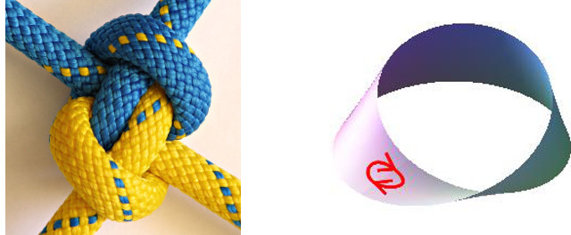

Knots and surfaces

This repository contains material for an undergraduate course on knots
and surfaces. Highlights are the Jones polynomial and the
classification of surfaces up to homeomorphism.
- Notes
- Problems and solutions
- Three-dimensional diagrams. These use the jsc3d
library; they should really be redone with a newer framework.
- Maple worksheets.
These are used to generate many of the diagrams. Diagrams have been
removed to reduce the files to a reasonable size, but they will be
regenerated if you execute the worksheets.
- All files
(including LaTeX source etc, released under a Creative Commons license)